AniMaGa
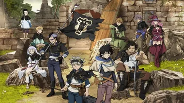
블랙클로버
어린 시절 부모에게 버림을 받고 빈민 지역 교회에서 자란 아스타와 라이벌 유노. 두 사람은 마법 세계의 정점인 마법제가 되겠다는 목표를 가지고 있다. 그러나 아스타는 전혀 마력을 가지고 있지 않아 마법 기술을 쓰지 못하는 반면, 유노는 어린 나이에도 불구하고 엄청난 마법의 소유자로 촉망 받는다. 시간이 흘러 두 사람은 15세가 되고, 마력을 가진 15세 아이들에게 마법기사단에 들어갈 수 있는 기회가 찾아온다.
유노는 강력한 마력으로 초대 마법제가 받았던 행운이 담긴 네잎 클로버 마도서에게 선택받는 반면, 아스타는 우여곡절 끝에 악마가 깃든 다섯 잎 클로버 마도서를 손에 넣게 된다. 반년 후 마법기사단 입단 시험에 응시하는 아스타와 유노. 아홉 개의 단으로 나눠진 마법기사단 모두에게 선택 받은 유노는 최강의 마법기사단 ‘금색의 여명’에 들어간 반면, 아스타는 간신히 ‘검은 폭우’단에 선택되어 그들의 꿈을 좇게 되는데…
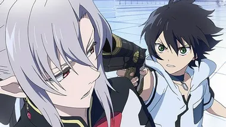
종말의 세라프
미지의 바이러스에 의해 인류는 괴멸하고, 아이들만이 살아남아 지하 도시에서 뱀파이어의 지배를 받고 있었다.
지기 싫어하는 기 센 소년, 햐쿠야 유이치로는 동료들의 희생으로 홀로 탈출에 성공, 복수를 맹세한다. 유이치로가 본 새로운 지상 세계란?!
한편, 흡혈귀에게 가족을 잃은 유이치로는 복수를 위해 일본제귀군에 입대하고, 그곳에서 새로운 동료들과 흡혈귀 섬멸을 위해 싸우지만-…?!
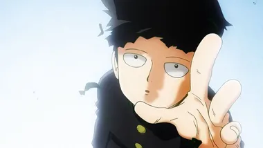
모브사이코 100 1기
100이 되면 폭발하는 소년의 이름은 모브.
평범한 청춘을 동경하는 중2의 소년 카게야마 시게오(통칭 모브)에게는 특별한 힘이 있었다. 그것은 초능력. 사기 영능력자, 사이비 종교단체 ETC. 그의 힘을 이용하려는 갖가지 사람들이 모이기 시작하며 소년 모브 안에서 뭔가가 움직인다.
충격의 사이킥 청춘 그라피티 개막!
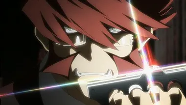
혈계전선
작중 시간으로 3년 전, 원인불명의 초현상으로 뉴욕이 갑자기 붕괴되고 재구축된다. 그 후 이계와 연결되어 이계와 인간계가 섞인 도시가 되고, 비밀결사 라이브라가 헬사렘즈 로트라 불리게 된 뉴욕에서 양쪽 세계의 균형을 유지하기 위해 여러모로 고군분투한다는 이야기이다. 나이토 작가 특유의 폭풍간지 캐릭터를 비롯해서 개그와 액션은 이번에도 건재하다. 묘하게 작가의 전작에서 등장했던 인물들의 이미지를 다수 채용하고 있다. 체인 스메라기의 복장이라던가.
메인스트림이 없는 옴니버스 구성이다. 각 스토리마다 조명되는 캐릭터도 다르고 그 화에서만 나오는 단역들도 많다. 뉴욕이 붕괴, 이계와 섞인 도시라는 설정과 등장인물만 숙지하면 어느 에피소드부터 보더라도 흐름을 이해하기에는 무리가 없다.
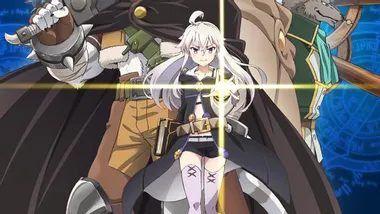
제로에서 시작하는 마법의 서
세상을 멸망시킬 수 있는 책, 제로의 서를 찾기 위한 용병과 제로의 여정을 그린 이야기.
태어날 때부터 짐승의 모습으로, 짐승으로 타락한자(獣堕ち)라 불리던 용병은, 숲속에서 자신의 심장을 노리던 마녀에게 쫓기다 우연히 식사를 준비하던 소녀의 냄비를 뒤엎고 그 소녀로부터 구해진다. 그 소녀 또한 마녀라는 걸 알게 되자마자 도망가지만, 저녁 식사 도중 난입한 소녀에게 죄책감을 느껴 스프를 대접하게 된다.
그 후, 자신을 제로라고 칭한 소녀로부터 자신의 짐승 타락 또한 마술의 부작용의 일종이며, 인간으로 돌아가게 해주는 걸 대가로 호위를 해줄 것을 부탁받는다.
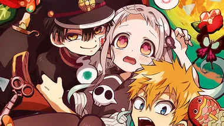
지박소년 하나코 군
"하나코 씨, 하나코 씨, 계신가요?"
카모메 학원에 전해 내려오는 7대 불가사의 소문. 구교사 3층 여자 화장실 3번째 칸에는 「하나코 씨」가 있는데, 불러낸 사람의 소원을 무엇이든 들어준다고 한다. 야시로 네네는 자신의 소원을 이루기 위해 학교 괴담에 몸을 맡기는데….
학원 7대 불가사의 "하나코 군"과 오컬트 소녀가 펼치는 하트풀 화장실 코미디!
5등분의 신부
가난한 생활을 하는 고등학교 2학년 우에스기 후타로 앞에 좋은 조건의 과외 아르바이트 제안이 날아든다.
그렇지만 제자는 놀랍게도 동급생!! 심지어 다섯 쌍둥이였다!! 전원 미소녀, 그러나 '낙제 직전', '공부 질색'인 문제아들! 후타로는 너무도 개성적인 그들을 과연 '졸업'까지 인도할 수 있을 것인가──!?
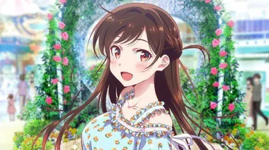
여친, 빌리겠습니다
단 한번의 "렌탈"로, 빛나기 시작하는 "리얼"이 있다.
도내에 사는 글러먹은 대학생, 키노시타 카즈야(20).
어느 날 "사정 있는" 초절 미소녀, 미즈하라 치즈루와의 만남을 계기로, 그의 인생은 크게 변하기 시작하고──!?
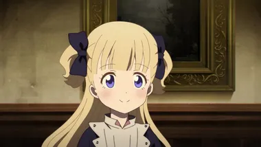
섀도 하우스
방문자가 없는 신기한 양옥 '섀도 하우스'. 그곳에는 귀족 흉내를 내는 얼굴 없는 일족 섀도와 그를 섬기는 얼굴 역할을 하는 살아있는 인형들이 살고 있다.
살아있는 인형 소녀 '에미리코'는 얼굴이 없는 주인 '케이트'에게 도움이 되려고, 날마다 분투 중이다.
어린이 섀도는 방을 나가지 못하게 되어 있지만 에미리코는 대청소를 통해 다른 살아있는 인형과 교류하고 또 케이트에게서 많은 것을 배우며 성장했다. 그리고 에미리코의 긍정적이고, 쾌활한 성격은 케이트를 비롯해 관련된 사람들을 조금씩 변화시켜 간다.
이윽고, 어린이 섀도들이 그 자질을 시험받는 선보이기의 날이 왔다. 여러가지 시련을 극복해 에미리코와 케이트는 무사히 공개를 돌파, 성인이 된 섀도로 취급받게 되지만, 동시에 이 저택의 이질성도 조금씩 밝혀져 간다.
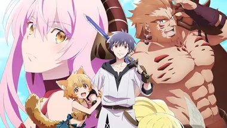
용사, 그만둡니다
용사에게 패해 부활를 꾀하는 마왕군 앞에 나타난 용사 레오.
검술, 마술, 동서고금 온갖 기술에 정통하고 홀로 마왕군을 쓰러뜨린 최강의 용사.
그러나 그는 너무 강하기 때문에 인간 나라에서 추방되어 마왕군으로 온 것이었다.
정체를 숨기고 마왕군에 들어간 레오는 인력난과 각종 문제, 허름한 마왕성조차도 터득한 기술과 경험으로 순식간에 재건해 나간다.
눈 깜빡할 사이에 간부로 출세하는 레오.
하지만 그 목표는 마왕군 재생이 아니라 세계 전체의 "재건"이었다──?!
역할을 끝낸 은퇴 용사의 마지막 일, 여기에 개막.
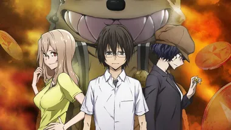
글레이프니르
어째서 나는 이런 모습으로 변신하게 되어버린 걸까?
만약 어느 날 갑자기, 자신이 「괴물」로 변신하게 되어버린다면─. 평범한 고등학생 카가야 슈이치가 갖게 된 건 그런 성가신 「특수능력」이었다….
하지만, 그 「힘」에 이끌리듯, 한 소녀가 슈이치 앞에 나타난다. 운명적으로 만난 두 사람을 위해, 준비된 비극과 희극─. 그리고 싸움의 막이 열린다!!
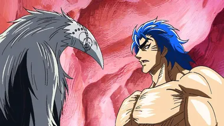
토리코 1기
세상은 고메(gourmet: 미식가) 시대!
IGO(국제 미식가 기관)직속 호텔 요리장 코마츠는 국장님에게 ‘가라라악어’를 잡아오라는 명령을 받는다. 임무에 발탁된 인물은 카리스마 ‘미식가’ 토리코!
토리코는 자신만의 특별 풀코스 메뉴를 개발하기 위해 세계 최고의 식재료를 찾아 불철주야 노력하는 초 실력가였다. 두 사람은 최고의 요리 재료를 찾아서 목숨을 건 여행을 떠나는데…!!